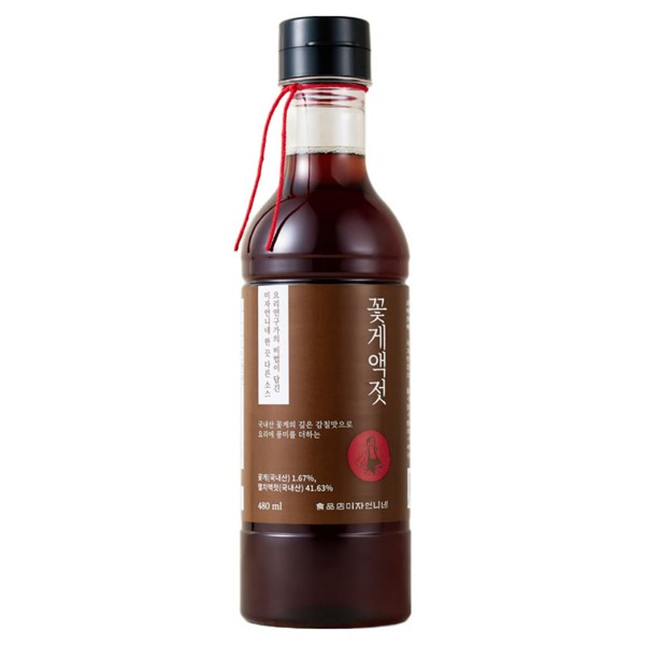

이 페이지는 쿠팡 파트너스 활동의 일환으로, 이에 따른 일정액의 수수료를 제공받습니다.
‹🐹 스타햄찌
국물 맛이 달라지는
꽃게액젓 한 병
국내산 꽃게의 깊은 감칠맛으로 요리에 풍미를 더하는 소스

제품 정보
- 제품명
- 미자언니네 꽃게액젓
- 용량
- 480ml
- 원재료
- 꽃게(국내산) 1.67%, 멸치액젓(국내산) 41.63%
- 특징
- 요리연구가의 비법이 담긴 소스
이렇게 써보세요
- 1찌개·국물 — 간장이나 소금 대신 한 스푼 넣어 감칠맛을 더해요.
- 2나물·겉절이 무침 — 양념에 섞으면 깊은 맛이 살아나요.
- 3김치·양념장 — 젓갈 풍미가 필요한 곳에 멸치액젓 대신 활용해요.
가격·재고는 판매 페이지 기준이며 예고 없이 바뀔 수 있어요.
제품 정보는 제품 라벨 기준입니다.